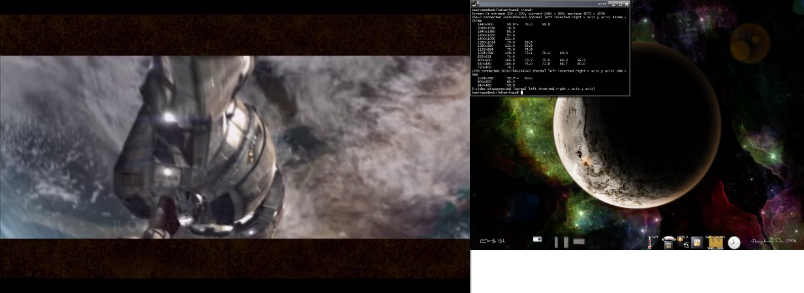

1.83. Mehrmonitor-Betrieb¶
Ab Xorg 7.3 wurde der Mehrmonitor-Betrieb deutlich verbessert. Fast alles lässt
sich nun zur Laufzeit konfigurieren. Dieses HowTo erklärt wie zur Laufzeit ein
weiterer Monitor in Betrieb genommen und nach Wunsch angeordnet wird. Zudem
wird auch erklärt wie diese Konfiguration in der xorg.conf angelegt wird.
Um dieses HowTo zu verwenden, sollte der Befehl:
$ X -version
mindestens die Versionsnummer 1.4.0 ausgeben.
1.83.1. Verwandte Artikel¶
Besitzer von NVidia Grafikkarten sollten statt diesem den Artikel Multihead mit NV lesen.
1.83.2. Virtual¶
Xorg blendet die Monitore in ein virtuelles Gesamtbild ein. Dieses
Gesamtbild muss alles umfassen, wenn sie also 2 TFTs mit 1280x1024
haben und die Bilder nebeneinander anordnen wollen, sollte ihr
virtuelles Bild mindestens 2560x1024 groß sein.
Ab einer gewissen Größe dieses Feldes ist jedoch keine 3D-Beschleunigung mehr möglich und Xorg wählt das Fenster entsprechend so, dass die 3D-Beschleunigung möglich bleibt. Hier gilt abzuwägen was einem wichtiger ist, da Virtual der einzige Parameter ist, der sich nicht zur Laufzeit ändern lässt.
1.83.2.1. aktuelle Größe ermitteln¶
Die aktuelle Größe ermittelt man von einem Terminal wie xterm aus
mit folgendem Befehl:
$ xrandr | grep maximum
Die Ausgabe sieht dann zum Beispiel so aus:
Screen 0: minimum 320 x 200, current 1024 x 768, maximum 2048 x 768
Die Ausgabe stammt von einem Notebook, dass einen eingebauten
LCD-Bildschirm mit 1024x768 Bildpunkten hat. Aus der Ausgabe
erfahren wir, dass nur ein Bildbereich Screen 0 definiert ist.
Mehrere Grafikkarten vorrausgesetzt können auch mehrere Bildbereiche
definiert und zum Beispiel verschiedene Window-Manager an diesen
Bereichen verwendet werden. Es können aber auch Bilder mehrerer
Grafikkarten zu einem Arbeitsbereich zusammengefasst werden.
Des weiteren ist abzulesen, dass die maximale Größe des Bildbereichs
2048x768 Bildpunkte umfasst und derzeit 1024x768 davon genutzt
werden.
Von besonderem Interesse ist hier natürlich die maximale Größe. Genügt sie den Ansprüchen oder muss sie geändert werden?
1.83.2.2. maximale Größe des Bildbereiches anpassen¶
Da diese Größe zur Laufzeit nicht geändert werden kann sollte vorher genau überlegt werden. Überschreitet die Größe den zur 3D-Beschleunigung nötigen Bereich, kann natürlich gleich ein großzügig gewählter Bereich gewählt werden.
1.83.2.2.1. benötigten Bereich berechnen¶
Als Beispiel wird ein Notebook-Monitor mit 1400x1050 Bildpunkten
betrachtet, an dem noch ein Röhrenmonitor der mit 1600x1200
Bildpunkten betrieben werden soll.
Sollen die Bildschirme nebeneinander angeordnet werden, müssen die Werte
der X-Achse aufsummiert und bei der Y-Achse der größere Wert verwendet
verwendet werden. Nebeneinander wäre der korrekte Wert also
3000x1200.
Werden die Bildschirme übereinander angeordnet, werden natürlich die
Rollen von X- und Y-Achse bei der Berechnung getauscht. In diesem Fall
wäre das Ergebnis also 1600x2250.
1.83.2.2.2. xorg.conf anpassen¶
Für die xorg.conf gibt es mehrere mögliche Orte. Bei den Meisten
befindet sie sich unter /etc/X11/xorg.conf, sie kann aber auch unter
/usr/local/etc/X11/xorg.conf befinden, was der Trennung von
Basissystem und Paketen entgegenkommt.
Es ist aber auch durchaus möglich, dass eine xorg.conf gar nicht
existiert. Das ist vor allem dann der Fall wenn alles automatisch
korrekt erkannt sind und der Window-Manager auch Dinge wie die
Tastatur-Konfiguration übernimmt. In einem solchen Fall muss eine
xorg.conf angelegt werden. Wie das geht ist allerdings nicht Teil
des Artikels.
Die Bildfläsche wird in der Display-SubSection der Screen-Section eingetragen. Das Schlüsselwort heißt Virtual. Dies ist ein Beispeil vom Notebook des Autors:
Section "Screen"
Identifier "Screen LVDS-CRT"
Device "ATI Radeon 7500 Mobile LVDS-CRT"
Monitor "LVDS Monitor"
Monitor "VGA-0 Monitor"
DefaultDepth 24
SubSection "Display"
Virtual 3072 1536
EndSubSection
EndSection
1.83.3. xrandr¶
Mit Hilfe des Programms xrandr lassen sich Zahlreiche Einstellungen
zur Laufzeit ändern. Das geht so weit, dass man zur Laufzeit Modelines
hinzufügen und einem Monitor zuweisen und auch wieder entfernen kann.
Das ist natürlich optimal zum Testen, bevor solche Einstellungen in der
xorg.conf eingetragen werden.
1.83.3.1. Ausgänge entdecken¶
Der Schlüssel zur Arbeit mit xrandr ist Einstellungen für
Monitorausgänge jeweils seperat vorzunehmen. Dazu müssen erst einmal die
erkannten Ausgänge ermittelt werden. Dazu kann der Befehl:
$ xrandr | awk '/connected/ {print($1)}'
verwendet werden. Folgendes ist die Ausgabe vom Notebook des Autors:
VGA-0
LVDS
S-video
LVDS ist die Bezeichnung für den internen Monitor des Notebooks.
VGA-0 ist die Bezeichnung für den analogen Ausgang.
S-video ist die Bezeichnung für eine S-Video TV-Ausgang.
Je nach Grafikkarte können die Bezeichnungen deutlich abweichen. Wenn
die Ausgabe von xrandr nicht die benötigten Ausgänge liefert kann
das Unterfangen bereits aufgegeben werden. Ohne in die
Treiberentwicklung einzusteigen ist hier nichts weiter zu erreichen.
1.83.3.2. Auflösung einstellen¶
Mit dem Kommando:
$ xrandr
lassen sich die erlaubten Modi und Wiederholfrequenzen anzeigen:
Screen 0: minimum 320 x 200, current 1024 x 768, maximum 2048 x 768
VGA-0 disconnected (normal left inverted right x axis y axis)
LVDS connected 1024x768+0+0 (normal left inverted right x axis y axis) 0mm x 0mm
1024x768 59.9*+ 60.0
800x600 60.3
640x480 59.9
S-video disconnected (normal left inverted right x axis y axis)
An der Ausgabe ist abzulesen, dass ausschließlich der interne Monitor
vorhanden ist. Es stehen drei Auflösungen (1024x768, 800x600 und
640x480) zur Verfügung. Bei der Wiederholfrequenz werden die für
TFTs üblichen 60Hz geboten. Das Zeichen + markiert den
Standardmodus, das Zeichen ***** den aktuell aktiven Modus.
Um den Modus zu ändern muss xrandr der entsprechende Ausgang, sowie
die gewünschte Auflösung mitgegeben werden. Optional kann auch die
Wiederholfrequenz in Hz angegeben werden. Um die Wiederholfrequenz zu
ändern muss auch immer die Auflösung mit angegeben werden. Die
Wiederholfrequenz muss übrigens nicht präzise angegeben werden, sie wird
als Wunsch aufgefasst und xrandr wird unter den verfügbaren die
auswählen, die der Angabe am nächsten ist.
Normalerweise ist es nicht notwendig die Wiederholfrequenz manuell auszuwählen, jedoch kann es vorkommen, dass bei langen Kabeln, wie sie oft bei Beamern vorkommen, die Bildqualität unter hohen Frequenzen leidet. Dann sollte auf jeden Fall eine niedrigere Frequenz verwendet werden.
Folgendes Beispiel veranschaulicht, wie die Auflösung des intenen
Monitors am Ausgang LVDS zu 800x600 ändert:
$ xrandr --output LVDS --mode 800x600
Mit dem nächsten Beispiel wird die Auflösung wieder zurückgeänder,
jedoch werden statt den üblichen 59.9 die altenative 60Hz
gewählt. Ziemlich sinnfrei, aber es ist ja bloß ein Beispiel:
$ xrandr --output LVDS --mode 1024x768 --rate 60
Mit folgendem Kommando kann der Bildschirm in den Standardzustand zurückversetzt werden:
$ xrandr --output LVDS --auto
1.83.3.3. Modelines zur Laufzeit testen¶
Für das folgende Beispiel wurde am Notebook des Autors ein Röhrenmonitor des Typs Sun GDM-5410 angeschlossen:
$ xrandr
Screen 0: minimum 320 x 200, current 1024 x 768, maximum 2048 x 768
VGA-0 connected (normal left inverted right x axis y axis)
1024x768 74.9 75.1 70.1 60.0 43.5
832x624 74.6
800x600 72.2 75.0 60.3 56.2
640x480 75.0 72.8 66.7 60.0
720x400 87.8 70.1
LVDS connected 1024x768+0+0 (normal left inverted right x axis y axis) 0mm x 0mm
1024x768 59.9*+ 60.0
800x600 60.3
640x480 59.9
S-video disconnected (normal left inverted right x axis y axis)
Wie zu sehen ist, sind jetzt da ein Monitor vorhanden ist auch für den Ausgang VGA-0 diverse Modi verfügbar. Das Kommando:
$ xrandr --output VGA-0 --auto
erweckt den Monitor zum Leben. Da in diesem Beispiel nichts vorkonfiguriert ist, heißt das der Monitor wird im Clone-Modus (beide Bildschirme zeigen das gleiche Bild) mit der gleichen Auflösung wie der andere betrieben.
Wie oben schon zu sehen ist, bietet der Monitor jedoch völlig unzureichende Wiederholraten an, obwohl er eigentlich zu deutlich besserem in der Lage ist. Der Autor hat zur Lösung des Problems die technischen Daten des Modells aus dem Internet gefischt und in einen ModeLine Generator eingegeben. Solche gibt es viele und die sind Prima über die Suchmaschine der Wahl zu finden.
Jedenfalls hat das Voodoo des Generators folgende Zeile für den Monitor hervorgebracht:
ModeLine "1024x768" 169.51 1024 1072 1312 1408 768 770 782 808 #149Hz
in dieser Form kann sie später einfach in die entsprechende
Monitor-Section der xorg.conf eingetragen werden. Doch dazu
mehr in einem anderen Kapitel.
Zur Laufzeit wird die ModeLine nun folgendermaßen eingebunden und verwendet:
$ xrandr --newmode "1024x768" 169.51 1024 1072 1312 1408 768 770 782 808
$ xrandr --addmode VGA-0 1024x768
$ xrandr --output VGA-0 --mode 1024x768 --rate 149
In der ersten Zeile wird xrandr der Modus bekannt gemacht, in der
zweiten Zeile wird er dem passenden Ausgang zugewiesen. In der Dritten
wird der Modus verwendet.
Sollte der Monitor nicht mit dem neuen Modus klarkommen gibt es verschiedene Auswege. Wer dazu in der Lage ist, kann folgendes Kommando blind tippen:
$ xrandr --output VGA-0 --mode 1024x768 --rate 75
Hier gilt natürlich die Wiederholrate des ursprünglichen Modus zu verwenden. Wenn das mit dem Blind-Tippen schief geht ist es natürlich auch möglich sich per SSH einzuloggen oder mit CTRL-ALT-F2 auf die Konsole zu wechseln. Dort bringt folgendes Kommando den Monitor wieder zur Raison:
$ env DISPLAY=:0.0 xrandr --output VGA-0 --mode 1024x768 --rate 75
Zu beachten ist hier natürlich, dass das Kommando als der Benutzer, dem die Xsession gehört, abgesetzt werden muss.
Unliebsame Modi können auch wieder entfernt werden. Dieses Feature funktioniert nicht immer, aber da die ModeLines spätestens mit dem nächsten Start von X wieder von alleine verschwinden ist das trotzdem nicht wirklich schlimm:
$ xrandr --delmode VGA-0 1024x768
$ xrandr --rmmode 1024x768
Das erste Kommando entfernt die Bindung von Modus und Ausgang, das Zweite löscht den Modus.
1.83.3.4. Monitore anordnen¶
 Der Clone-Modus hat seine Vorzüge, zum Beispiel bei Präsentation, jedoch gibt es auch einen Nachteil, der Overlay-Modus (in diesem werden hauptsächlich Videos direkt in den Grafikspeicher gezeichnet) wird nur auf dem primären Monitor dargestellt und es entsteht kein zusätzlicher Arbeitsplatz. Deshalb entsteht normalerweise bald der Wunsch die Monitore neben- oder übereinander anzuordnen.
{kind=link}
Für dieses Beispiel hat der Autor eine Xorg-Konfiguration geladen, die
ein höheren Bildbereich von 3072x1536 Bildpunkten erlaubt und auch
schon die Passenden ModeLines für den Röhrenmonitor aus dem vorigen
Abschnitt enthält. Um den Röhrenmonitor links vom Notebook zu
positionieren genügt folgender Befehl:
$ xrandr --output VGA-0 --left-of LVDS --mode 1840x1380
Wie zu sehen ist geschieht die Anordnung anhand der Ausgänge der Grafikkarte. Die Anweisung heißt hier einfach analoger VGA-Ausgang links vom internen LCD-Monitor. Folgende Anweisung wäre äquivalent:
$ xrandr --output VGA-0 --mode 1840x1380
$ xrandr --output LVDS --right-of VGA-0
Nach der Neuanordnung muss normalerweise der Window-Manager neu gestartet werden. Beim Window-Manager enlightenment, der vom Autor verwendet wird genügt dafür die Tastenkombination CTRL-ALT-END. Der Neustart dauert in diesem Fall nicht länger als eine Sekunde. Vor der Neuanordnung der Monitore sollte also zuerst ermittelt werden, wie der eigene Window-Manager neu gestartet wird.
Der Parameter --mode wird natürlich nur benötigt wenn die aktuelle
bzw. die Standardauflösung nicht erwünscht ist.
Mögliche Anordnungen sind --left-of, --right-of, --above,
--below und --same-as. Die Verwendung ist für Menschen mit
rudimentären Englischkenntnissen wohl selbsterklärend.
Als alternative ist auch der Parameter --pos verfügbar. Damit sind
alle möglichen Anordnungen, die sich aber nicht nach den aktuellen
Auflösungen richten, möglich. Bis hin zu sich überschneidenden Bildern.
Zur vollständigkeit hier noch die Ausgabe von xrandr nach der
Anordnung der Monitore:
$ xrandr
Screen 0: minimum 320 x 200, current 2864 x 1380, maximum 3072 x 1536
VGA-0 connected 1840x1380+0+0 (normal left inverted right x axis y axis) 364mm x 291mm
2048x1536 76.0
1840x1380 85.0*
1600x1200 97.0 75.0
1400x1050 111.0
1280x1024 111.8 76.0 74.9 76.1 75.0 66.9
1280x960 121.0
1152x921 75.8 65.9
1152x864 75.0
1024x768 149.0 74.9 75.1 70.1 60.0 43.5
832x624 74.6
800x600 160.0 72.2 75.0 60.3 56.2
640x480 160.0 75.0 72.8 66.7 60.0
720x400 87.8 70.1
LVDS connected 1024x768+1840+0 (normal left inverted right x axis y axis) 0mm x 0mm
1024x768 59.9*+ 60.0
800x600 60.3
640x480 59.9
S-video disconnected (normal left inverted right x axis y axis)
Nach dem Wechsel vom Mehrmonitor- zurück in den Normalbetrieb kann es sein, dass Anwendungen nach dem Starten verschollen bleiben. Diese Anwendungen haben ihr Fenster außerhalb des Bildbereichs geöffnet. Window-Manager bieten normalerweise eine Funktion um solche Fenster wieder zurückzuholen.
1.83.3.5. Monitore abschalten¶
Bevor der Stecker gezogen wird ist es nicht unbedingt eine schlechte Idee die Monitor-Ansteuerung abzuschalten. Dazu genügt das Kommando:
$ xrandr --output VGA-0 --off
1.83.4. xorg.conf anpassen¶
Will man bestimmte ModeLines festhalten oder eine Konfiguration
festzurren, zum Beispiel weil der Mehr-Monitor-Betrieb die Regel und
nicht die Ausnahme ist, lohnt es sich die gewünschten Einstellungen in
der xorg.conf einzutragen.
1.83.4.1. Probleme vermeiden¶
Vor dem Ändern der xorg.conf sollten einige Vorsichtsmaßnahmen
getroffen werden. Ein Backup der xorg.conf sollte erfolgen und
Display-Manager wie xdm,
kdm oder gdm sollten
deaktiviert werden. Zum Testen sollte startx verwendet werden. Nach
erfolgreicher Konfiguration kann der Display-Manager wieder aktiviert
werden.
1.83.4.1.1. xdm deaktivieren¶
Um xdm zu deaktivieren genügt es die entsprechende Zeile in der
/etc/ttys auf off zu setzen und den Befehl:
# kill -HUP 1
auszuführen. Damit liest der Init-Prozess die Datei /etc/ttys neu
ein. Nach dem Beenden von X wird es dann nicht mehr automatisch neu
starten. Nach dem Zurücksetzen auf on kann mit dem gleichen Befehl
der xdm wieder geweckt werden.
1.83.4.2. Section „Monitor“¶
Es empfiehlt sich den Monitoren Bezeichner zu geben, die widerspiegeln
an welchen Ausgang sie gebunden werden. Die Möglichkeiten zur Anordnung
sind RightOf, LeftOf, Above und Below. Wenn der
Clone-Mode erwünscht ist wird einfach keine Anordnung angegeben.
Section "Monitor"
Identifier "VGA-0 Monitor"
EndSection
Section "Monitor"
Identifier "VGA-1 Monitor"
Option "RightOf" "VGA-0 Monitor"
EndSection
Für Röhrenmonitore empfiehlt es sich gelegentlich auf die Option PreferredMode zurückzugreifen. Beim Autor hat das auf einigen System leider dazu geführt, dass der X-Server nicht mehr startet, auf Anderen ging es aber ohne Probleme.
1.83.4.3. Section „Device“¶
In der Device Section werden die Monitore dann den Ausgängen zugewiesen.
Dazu verwendet man die Option mit dem Namen Monitor-Ausgang,
wobei Ausgang natürlich mit der Bezeichnung für den Ausgang der
Grafikkarte zu ersetzen ist, so wie er von xrandr geliefert wird.
Section "Device"
...
Option "Monitor-VGA-0" "VGA-0 Monitor"
Option "Monitor-VGA-1" "VGA-1 Monitor"
EndSection
1.83.4.4. Section „Screen“¶
Zu guter letzt müssen in die Screen-Section alle Monitore die Verwendung finden sollen eingetragen werden.
Section "Screen"
...
Monitor "VGA-0 Monitor"
Monitor "VGA-1 Monitor"
...
EndSection
1.83.5. Probleme und Lösungen¶
Hier finden sich bekannte Probleme und Lösungen.
1.83.5.1. Overlay Modus¶
Wenn es Probleme mit der Vollbild-Overlay-Darstellung gibt (zum Beispiel mit mplayer) kann es helfen, den Monitor auf dem die Darstellung erfolgen soll in der linken, oberen Ecke der Bildschirmanordnung zu platzieren.
Alternativ lässt sich die Overlay Ausgabe mit dem Befehl xvattr
umschalten. Auf welches Ausgabegerät das XV-Overlay ausgegeben werden
soll, bestimmt die Variable XV_CRTC. Die aktuelle Einstellung kann
folgendermaßen abgefragt werden:
$ xvattr -a XV_CRTC
Die Ausgabe kann z.B. folgendermaßen aussehen:
Found Xv 2.2
XV_CRTC = -1
Der Wert „XV_CRTC = -1“ sorgt für ein automatisches Umschalten des Overlays im Mehrschirmbetrieb. Wird dieser Wert auf „0“ gesetzt, erfolgt die Ausgabe des XV-Overlays auf dem primären Monitor.
Mit folgendem Befehl wird die Ausgabe des Overlays auf dem sekundären Monitor aktiviert:
$ xvattr -a XV_CRTC -v 1